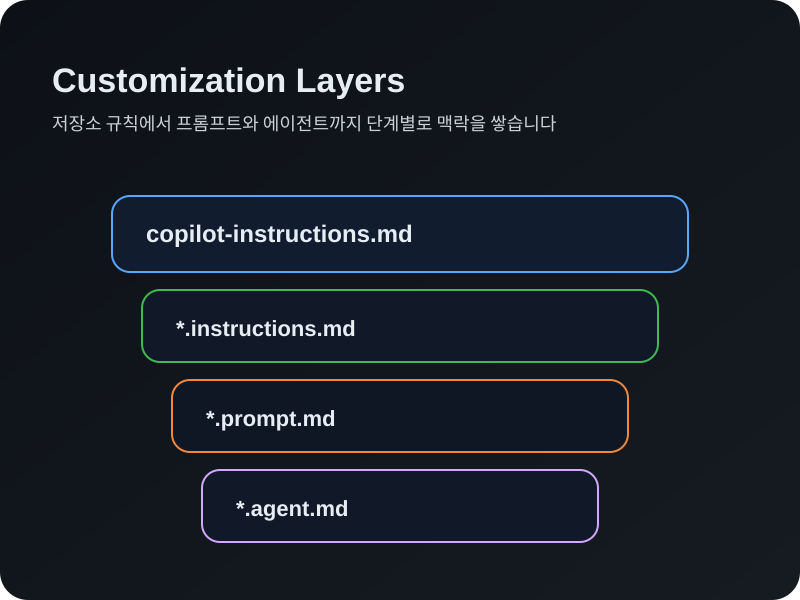

이 실습에서 배우는 것
copilot-instructions.md로 프로젝트 컨텍스트와 표준을 Copilot에 전달
글로브 패턴으로 특정 파일·디렉토리에만 적용되는 맞춤 규칙
반복 작업을 /슬래시 명령으로 자동화하는 프롬프트 템플릿
전문화된 도구·성격·응답 형식을 가진 맞춤 AI 어시스턴트
 저장소 커스텀 지시사항
저장소 커스텀 지시사항
copilot-instructions.md — Copilot의 프로젝트 이해도를 높이는 첫 단추
저장소 커스텀 지시사항은 .github/copilot-instructions.md 파일로, Copilot Chat의 모든 요청에 자동으로 포함됩니다.
포함해야 할 내용
- 프로젝트 설명 — 목적과 도메인
- 폴더 구조 — 주요 디렉토리와 역할
- 코딩 표준 — 스타일·네이밍·규칙
- 도구 & 프레임워크 — 사용 기술 스택
짧고 간결하게 유지하세요.
프롬프트 예시
→ Copilot이 커스텀 지시사항을 참조하여 응답합니다!

 파일별 커스텀 지시사항
파일별 커스텀 지시사항
*.instructions.md — 특정 파일에만 적용되는 맞춤 규칙
지시사항 파일은 프론트매터의 applyTo 글로브 패턴으로 특정 파일에 자동 적용됩니다.
저장소 지시사항 vs 파일별 지시사항
- 저장소 — 모든 채팅 요청에 항상 포함
- 파일별 — 매칭 파일 작업 시에만 포함
- 위치:
.github/instructions/디렉토리
---
applyTo: "assignments/**/*.md"
---
# Assignment Markdown Structure GuidelinesAgent 모드에서 Copilot이 규칙을 따르는지 확인합니다.
 재사용 가능한 프롬프트
재사용 가능한 프롬프트
*.prompt.md — /슬래시 명령으로 반복 작업을 자동화
프롬프트 파일은 일반적이고 반복적인 작업을 /슬래시 명령으로 간소화합니다.
프롬프트 파일의 특징
- 위치:
.github/prompts/디렉토리 - 마크다운 링크로 다른 파일 참조 가능
- "무엇(What)"을 해야 하는지에 초점
agent: agent프론트매터로 Agent 모드 연동
전체 워크플로우(디렉토리 생성 → 설정 업데이트)를 자동화합니다.
 커스텀 에이전트
커스텀 에이전트
*.agent.md — 전문화된 AI 어시스턴트 만들기
커스텀 에이전트는 Copilot의 동작을 근본적으로 변경하여, 특정 도구와 성격을 가진 전문화된 대화 경험을 만듭니다.
커스텀 에이전트 구성 요소
- name — 드롭다운에 표시되는 이름
- description — 에이전트 설명
- tools — 사용할 도구 목록 (search, web 등)
- 성격 & 응답 형식 — 고유한 스타일 정의
---
name: assignment-brainstorming
tools: ["search", "web"]
---
🔍 QUICK SCAN → 💡 IDEA BURST → 🎯 NEXT QUESTION아이디어 발굴에 집중하는 전용 채팅 경험을 구축합니다.
 커스터마이징 전체 그림
커스터마이징 전체 그림
지시사항 → 프롬프트 → 에이전트가 함께 작동하는 방식
└─ *.instructions.md — 매칭 파일에만 추가
└─ *.prompt.md — /명령으로 반복 작업 자동화
└─ *.agent.md — 전문화된 AI 경험
계층 구조의 이점
- 저장소 지시사항으로 기본 컨텍스트 확보
- 파일별 지시사항으로 세분화된 규칙 적용
- 프롬프트 파일로 팀 전체 워크플로우 표준화
- 커스텀 에이전트로 전문 도메인 지원
팀의 AI 개발 문화를 코드화할 수 있습니다.
 GitHub Actions — 실습의 비밀
GitHub Actions — 실습의 비밀
뒤에서 자동으로 돌아가는 검증 시스템
이 실습은 GitHub Actions를 사용해 여러분의 진행을 자동으로 확인합니다.
동작 원리
- 1단계: 커스텀 지시사항 → push 이벤트 감지 →
copilot-instructions.md확인 - 2단계: 파일별 지시사항 → push 이벤트 감지 →
instructions.md+ 과제 확인 - 3단계: 프롬프트 파일 → push 이벤트 감지 →
prompt.md+ 과제 확인 - 4단계: 커스텀 에이전트 → push 이벤트 감지 →
agent.md확인
 핵심 정리
핵심 정리
copilot-instructions.md — 모든 채팅에 프로젝트 컨텍스트 자동 포함
applyTo 글로브 패턴으로 특정 파일에만 규칙 적용
/슬래시 명령으로 반복 작업 자동화 — 팀 전체 표준화
도구·성격·응답 형식을 가진 전문화된 AI 어시스턴트